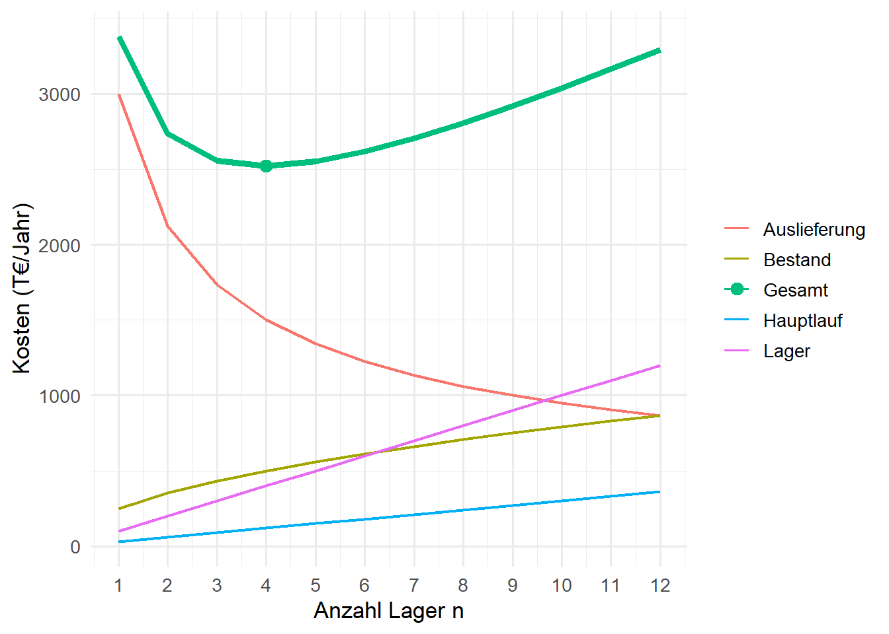

| Komponente | Leitfrage | Kennzahl |
|---|---|---|
| Lieferzeit | Wie lange dauert es vom Auftrag bis zur Ankunft? | Ø Lieferzeit, Anteil Same-Day |
| Lieferzuverlässigkeit | Wird der zugesagte Termin eingehalten? | Termintreue, OTIF |
| Lieferfähigkeit | Ist die bestellte Ware vorrätig? | α-/β-Servicegrad |
| Lieferbeschaffenheit | Kommt die richtige Ware in richtiger Menge und unbeschädigt an? | Fehlerquote, Reklamationen |
| Lieferflexibilität | Kann auf Sonderwünsche reagiert werden? | Anteil erfüllter Sonderwünsche |
| Information | Weiß der Kunde, wo seine Sendung ist? | Tracking, Avis |
5 Distributionsstrukturen und -kanäle
Lernziele
Nach der Bearbeitung dieses Kapitels können Sie …
- ein Distributionssystem in seine akquisitorische (Absatzkanal) und seine physische Seite (Logistikkanal) zerlegen und begründen, warum beide nicht übereinstimmen müssen,
- die Komponenten des Lieferservice benennen und mit Kennzahlen wie OTIF messen,
- direkte und indirekte Absatzkanäle unterscheiden und die Funktionen von Handelsstufen erklären,
- ein-, zwei- und mehrstufige Distributionsstrukturen sowie Cross-Docking beschreiben und ihre Vor- und Nachteile abwägen,
- den Zusammenhang zwischen Anzahl der Lager, Kostenkomponenten und Lieferzeit erklären und mit einem einfachen Kostenmodell in R untersuchen,
- Tabellen mit
pivot_longer()vom breiten in das lange Format überführen und Anteile mit logischen Vektoren berechnen.
Literatur zur Vertiefung
- Distributionsnetzwerke und Gestaltungsoptionen: (Chopra und Meindl 2025).
- Distributionslogistik und Lieferservice: (pfohl2018logistiksysteme?); (Günther und Tempelmeier 2012).
5.1 Vom Zielsystem zum Distributionssystem
Kapitel 3 hat gezeigt, dass Logistik zwischen konkurrierenden Zielen vermitteln muss: Kosten, Geschwindigkeit, Qualität und Flexibilität lassen sich nicht gleichzeitig maximieren. In der Distribution, also auf dem Weg vom Hersteller zum Kunden, werden diese Zielkonflikte besonders sichtbar. Hier entscheidet sich, ob die Ware zum richtigen Zeitpunkt, in der richtigen Menge und im richtigen Zustand beim Kunden ankommt. Gleichzeitig entstehen hier in vielen Branchen die größten Logistikkosten.
Dieses Kapitel liefert den strukturellen Rahmen für alle weiteren Kapitel zur Netzwerk- und Distributionsplanung. Bevor man mit Optimierungsmodellen Standorte auswählt (Kapitel 6 und 7), Transporte verteilt (Kapitel 8) oder Touren plant (Kapitel 15), muss klar sein, welche Art von Distributionssystem überhaupt aufgebaut werden soll: Über welche Absatzkanäle wird verkauft? Wie viele Lagerstufen gibt es? Wird über ein Zentrallager, über regionale Läger oder ganz ohne Lager über Umschlagpunkte verteilt? Und welchen Lieferservice erwarten die Kunden?
5.2 Fallbeispiel: Wohin soll die Distribution von SushiFresh wachsen?
Fallstudie: Ausgangslage und Wachstumsideen
SushiFresh produziert in einer Küche und verkauft seine Boxen über die Kühlregale von sechs Supermärkten im Rhein-Main-Gebiet. Die Märkte werden jeden Morgen direkt aus der Küche beliefert. Der Absatzkanal führt damit über den Handel (Hersteller → Supermarkt → Kunde), der Logistikkanal dagegen direkt von der Küche in den Markt.
Die Geschäftsführung diskutiert drei Wachstumsideen:
- Handel: Die Supermarktkette RheinMarkt möchte die Boxen in rund 40 Märkten in ganz Hessen listen. RheinMarkt betreibt eine eigene Handelslogistik mit Zentrallager und Frische-Umschlagpunkten.
- Lieferdienst: Frische Boxen sollen direkt an Endkunden in Frankfurt geliefert werden.
- Onlineshop „Sushi@Home“: Haltbare Kits zum Selbermachen, Saucen und Zubehör werden bundesweit per Paket verschickt.
Die drei Ideen unterscheiden sich in Kunde, Produkt und Lieferservice und führen deshalb zu unterschiedlichen Distributionssystemen. Wir werden sie im Verlauf des Readers schrittweise aufgreifen: Den Onlineshop in Kapitel 12, den Lieferdienst in Kapitel 13 und die RheinMarkt-Anfrage abschließend in Kapitel 16.
5.3 Das Distributionssystem
Definition: Distributionssystem
Das Distributionssystem umfasst alle Akteure, Einrichtungen und Prozesse, über die ein Produkt vom Hersteller zum Kunden gelangt. Man unterscheidet
- die akquisitorische Distribution (Absatzkanal): Wer ist am Verkauf beteiligt, wer übernimmt Eigentum, Preisgestaltung und Kundenkontakt?
- die physische Distribution (Logistikkanal): Wie fließt die Ware, über welche Lagerstufen, Standorte, Umschlagpunkte und Transportwege?
Die Unterscheidung geht auf die betriebswirtschaftliche Logistikliteratur zurück (pfohl2018logistiksysteme?) und ist mehr als eine begriffliche Feinheit: Absatz- und Logistikkanal müssen nicht übereinstimmen. Beim Streckengeschäft etwa verkauft ein Händler die Ware, ohne sie jemals physisch in den Händen zu halten. Der Hersteller liefert direkt an den Kunden des Händlers. Umgekehrt kann ein Hersteller seine Produkte direkt an Endkunden verkaufen, die Lagerung und Zustellung aber vollständig einem Logistikdienstleister überlassen.
Für SushiFresh ist diese Trennung bereits heute sichtbar. Der Absatzkanal führt über die Supermärkte, physisch werden die Märkte aber direkt aus der Küche beliefert, an der Handelslogistik vorbei. Bei RheinMarkt stellt sich nun die Frage, ob dieser direkte Logistikkanal beibehalten oder die Ware über die Handelslogistik des Kunden geführt wird. Der Absatzkanal ist in beiden Fällen derselbe.
Die Gestaltung eines Distributionssystems erstreckt sich über alle Planungsebenen aus Kapitel 1:
| Ebene | Typische Entscheidungen | Kapitel |
|---|---|---|
| strategisch | Absatzkanäle, Anzahl der Lagerstufen, Standorte | dieses Kapitel, 6, 7 |
| taktisch | Zuordnung von Kunden zu Lagern, Transportmengen, Bestandsniveaus, Fuhrpark | 8, 9, 13 |
| operativ | Kommissionierung, Tourenplanung, tägliche Disposition | 12, 14, 15 |
5.4 Lieferservice als Zielgröße
Was ein Distributionssystem leisten muss, wird über den Lieferservice beschrieben. Er ist die distributionsbezogene Konkretisierung der Service- und Zeitziele aus Kapitel 3.
Definition: Lieferservice
Der Lieferservice umfasst alle Leistungen der Distribution, die der Kunde zwischen Auftragserteilung und Warenempfang wahrnimmt. Er wird üblicherweise in sechs Komponenten gegliedert: Lieferzeit, Lieferzuverlässigkeit, Lieferfähigkeit, Lieferbeschaffenheit, Lieferflexibilität und Information.
Die einzelnen Komponenten stehen ihrerseits in Konflikt: Eine kurze Lieferzeit verlangt kundennahe Bestände und viele kleine Sendungen, eine hohe Lieferfähigkeit hohe Sicherheitsbestände. Wie hoch die Bestände für einen gewünschten Servicegrad sein müssen, berechnen wir in den Kapiteln 9 und 10. Hier geht es zunächst um das Messen.
Eine im Handel weit verbreitete Kennzahl ist OTIF (on time, in full): der Anteil der Lieferungen, die pünktlich und vollständig beim Kunden ankommen. Sie verknüpft Zuverlässigkeit und Vollständigkeit und wird von Handelsketten häufig vertraglich vereinbart, oft verbunden mit Vertragsstrafen bei Unterschreitung.
R-Exkurs: Anteile mit logischen Vektoren berechnen
Vergleichsoperatoren wie <= oder == liefern in R logische Vektoren (TRUE/FALSE). Weil R bei Rechenoperationen TRUE als 1 und FALSE als 0 behandelt, liefert mean() auf einem logischen Vektor direkt den Anteil der TRUE-Werte. Mit & (und) bzw. | (oder) lassen sich mehrere Bedingungen elementweise verknüpfen. Das ist genau das, was OTIF verlangt:
Code
# Zehn Belieferungen eines Marktes: Ankunftszeit (Stunden) und gelieferte Menge
lieferungen <- tibble(
ankunft = c(6.8, 7.4, 7.9, 8.2, 7.1, 7.6, 7.95, 7.3, 8.4, 7.0),
bestellt = c(40, 42, 38, 45, 40, 41, 39, 44, 40, 42),
geliefert = c(40, 42, 36, 45, 40, 41, 39, 44, 40, 42)
)
puenktlich <- lieferungen$ankunft <= 8 # vor Ladenöffnung um 8 Uhr
vollstaendig <- lieferungen$geliefert == lieferungen$bestellt
c(Puenktlichkeit = mean(puenktlich),
Vollstaendigkeit = mean(vollstaendig),
OTIF = mean(puenktlich & vollstaendig)) Puenktlichkeit Vollstaendigkeit OTIF
0.8 0.9 0.7 Die Pünktlichkeit liegt bei 80 %, die Vollständigkeit bei 90 %, OTIF aber nur bei 70 %: Weil beide Bedingungen gleichzeitig erfüllt sein müssen, ist OTIF immer kleiner oder gleich dem Minimum der beiden Einzelquoten.
5.5 Absatzkanäle: die vertikale Struktur
Ein Absatzkanal beschreibt die Folge der Akteure, die ein Produkt bis zum Endkunden durchläuft. Nach der Zahl der zwischengeschalteten Handelsstufen unterscheidet man:
- direkter Vertrieb (Nullstufen-Kanal): Hersteller → Endkunde, z. B. Onlineshop, Lieferdienst, eigene Filialen,
- einstufig indirekter Vertrieb: Hersteller → Einzelhandel → Endkunde, z. B. SushiFresh über Supermärkte,
- zweistufig indirekter Vertrieb: Hersteller → Großhandel → Einzelhandel → Endkunde, z. B. Getränke über den Getränkefachgroßhandel.
Zwischenstufen sind nicht bloß „Kostenaufschläge“. Sie übernehmen Funktionen, die sonst der Hersteller erbringen müsste: Sortimentsbildung (der Kunde findet viele Produkte an einem Ort), Mengenausgleich (große Lieferungen werden in kleine Abnahmemengen aufgeteilt), Lagerhaltung, Finanzierung (der Handel trägt Bestands- und Forderungsrisiken) und Kundenkontakt. Die Entscheidung zwischen direktem und indirektem Vertrieb ist deshalb eine Abwägung: Der direkte Weg bringt volle Kontrolle über Preis, Marke, Kundendaten und Marge, erfordert aber eigene Logistik und Kundenakquise. Der indirekte Weg bringt Reichweite und die Logistik des Handels, kostet aber Marge, schafft Abhängigkeit und ist oft mit Listungsgebühren verbunden.
Wer mehrere Kanäle parallel betreibt, muss mit Kanalkonflikten rechnen: Bietet SushiFresh dieselben Boxen über den eigenen Lieferdienst günstiger an als im Supermarkt, verärgert das den Handelspartner. Typische Antworten sind kanalspezifische Sortimente (z. B. Kits nur online) oder abgestimmte Preise.
5.6 Physische Distributionsstrukturen: die horizontale Struktur
Die physische Struktur beschreibt, über wie viele Lagerstufen und wie viele Lager je Stufe die Ware fließt. Vier Grundformen lassen sich unterscheiden:
- Direktbelieferung ab Werk: Jeder Kunde wird direkt vom Produktionsstandort beliefert. Es gibt keine Lagerkosten und keinen Umschlag, aber viele kleine Sendungen und lange Wege. Sinnvoll bei Großkunden mit vollen Ladungen oder bei kleinen Absatzgebieten wie heute bei SushiFresh.
- Einstufige Struktur mit Zentrallager: Alle Kunden werden aus einem Zentrallager versorgt. Bestände sind gebündelt, die Steuerung ist einfach, aber die Auslieferstrecken werden lang.
- Zwei- oder mehrstufige Struktur: Ein Zentrallager versorgt Regionallager, die wiederum die Kunden beliefern. Hauptläufe zwischen den Stufen sind gut gebündelt, die Kunden sind nah, dafür steigen Bestände und Umschlagaufwand. Diese Struktur ist typisch für den Lebensmitteleinzelhandel und die Ersatzteillogistik.
- Cross-Docking: Umschlagpunkte ohne Lagerbestand bündeln die Sendungen vieler Lieferanten und verteilen sie in derselben Nacht auf die Empfänger.
| Struktur | Vorteil | Nachteil | typisch für |
|---|---|---|---|
| Direkt ab Werk | keine Lagerkosten, kein Umschlag | viele kleine Sendungen, lange Wege | Großkunden, volle Ladungen |
| Zentrallager | Bestand gebündelt (Pooling), einfache Steuerung | lange Auslieferstrecken | Spezialsortimente |
| Zentral- + Regionallager | kurze Lieferzeiten, gebündelte Hauptläufe | mehr Bestand und Umschlag, komplexere Steuerung | Lebensmittelhandel, Ersatzteile |
| Cross-Docking | Bündelung ohne Lagerbestand, schneller Durchlauf | hohe Synchronisationsanforderung | Frische, Handelslogistik, KEP |
Theorie-Vertiefung: Lagergeschäft und Streckengeschäft im Lebensmittelhandel
Der deutsche Lebensmitteleinzelhandel hat seine Logistik in den vergangenen Jahrzehnten stark zentralisiert. Früher belieferten die Hersteller jede Filiale direkt (Filialdirektbelieferung). Heute läuft der größte Teil der Ware über handelseigene Zentral- und Regionallager (Lagergeschäft), weil der Handel so Anlieferungen bündelt, die Zahl der Lkw-Stopps an der Filialrampe senkt und Bestände zentral steuert. Ausnahmen sind Produkte mit sehr kurzer Haltbarkeit oder sehr hohem Volumen, etwa Backwaren, Molkereiprodukte, Getränke oder frische Convenience-Produkte. Für sie lohnt sich die Belieferung über Frische-Cross-Docks oder weiterhin die direkte Filialbelieferung durch den Hersteller (Streckengeschäft). Für einen Frischeproduzenten wie SushiFresh ist die Wahl zwischen diesen Wegen deshalb keine Detailfrage, sondern entscheidet über Haltbarkeit, Kosten und die Abhängigkeit vom Handel. Kapitel 16 rechnet diese Wahl für die RheinMarkt-Anfrage durch.
5.7 Wie viele Lager? Kosten und Lieferzeit
Die vielleicht wichtigste strukturelle Frage lautet: Wie viele Lager soll ein Distributionssystem haben? Mit jedem zusätzlichen Lager verändern sich vier Kostenkomponenten und die Lieferzeit (Chopra und Meindl 2025):
- Lagerfixkosten (Miete, Personal, Gebäude) steigen etwa proportional zur Zahl der Lager.
- Bestandskosten steigen, weil jeder Standort seinen eigenen Sicherheitsbestand braucht. Bei unabhängiger Nachfrage wächst der gesamte Sicherheitsbestand etwa mit der Wurzel der Lageranzahl. Das ist das Wurzelgesetz, die Umkehrung des Pooling-Effekts, den Kapitel 9 formal herleitet.
- Hauptlaufkosten (Belieferung der Lager) steigen, weil mehr Lager angefahren werden müssen.
- Auslieferkosten (Lager → Kunde) sinken, weil die Kunden im Mittel näher am nächsten Lager liegen. Bei gleichmäßig verteilten Kunden in einer Fläche sinkt die durchschnittliche Entfernung etwa mit \(1/\sqrt{n}\).
- Die Lieferzeit sinkt mit zunehmender Lageranzahl.
Ein einfaches Modell fasst diese Zusammenhänge zusammen:
\[ K(n) = \underbrace{f \cdot n}_{\text{Lager}} + \underbrace{b \cdot \sqrt{n}}_{\text{Bestand}} + \underbrace{h \cdot n}_{\text{Hauptlauf}} + \underbrace{\frac{a}{\sqrt{n}}}_{\text{Auslieferung}} \]
Die Parameter \(f, b, h, a\) sind hier illustrativ gewählt. Für ein konkretes Netz würden sie aus Kostensätzen und Kundenverteilungen geschätzt.
R-Exkurs: Breite und lange Tabellen mit pivot_longer()
Wir berechnen die vier Kostenkomponenten für \(n = 1, \dots, 12\) Lager zunächst in einer breiten Tabelle: eine Zeile je Lageranzahl, eine Spalte je Kostenkomponente. Für ggplot() ist dieses Format unpraktisch, denn jede Linie im Diagramm bräuchte einen eigenen geom_line()-Aufruf. ggplot() arbeitet am besten mit langen Tabellen, in denen eine Spalte die Komponente benennt und eine Spalte den Wert enthält. Die Funktion tidyr::pivot_longer() erledigt diese Umformung: cols wählt die Spalten, die „gestapelt“ werden sollen, names_to benennt die neue Kategorienspalte, values_to die neue Wertspalte.
Code
# A tibble: 3 × 6
n Lager Bestand Hauptlauf Auslieferung Gesamt
<int> <dbl> <dbl> <dbl> <dbl> <dbl>
1 1 100 250 30 3000 3380
2 2 200 354. 60 2121. 2735.
3 3 300 433. 90 1732. 2555.Code
kosten_lang <- kosten |>
pivot_longer(cols = -n, names_to = "Komponente", values_to = "Kosten")
head(kosten_lang, 5) # langes Format# A tibble: 5 × 3
n Komponente Kosten
<int> <chr> <dbl>
1 1 Lager 100
2 1 Bestand 250
3 1 Hauptlauf 30
4 1 Auslieferung 3000
5 1 Gesamt 3380Aus 12 Zeilen mit 6 Spalten werden 60 Zeilen mit 3 Spalten. Jetzt genügt ein einziger geom_line()-Aufruf, und die Farbe wird über aes(colour = Komponente) zugeordnet.
Code
n_opt <- kosten$n[which.min(kosten$Gesamt)]
ggplot(kosten_lang, aes(x = n, y = Kosten, colour = Komponente)) +
geom_line(aes(linewidth = Komponente == "Gesamt")) +
geom_point(data = filter(kosten_lang, Komponente == "Gesamt", n == n_opt),
size = 3) +
scale_linewidth_manual(values = c(0.8, 1.6), guide = "none") +
scale_x_continuous(breaks = 1:12) +
labs(x = "Anzahl Lager n", y = "Kosten (T€/Jahr)", colour = NULL) +
theme_minimal(base_size = 13)
Im Beispiel liegt das Kostenminimum bei 4 Lagern. Links davon dominieren die hohen Auslieferkosten, rechts davon die mit jedem Lager wachsenden Fix- und Bestandskosten. Die Gesamtkostenkurve ist in der Nähe des Optimums sehr flach. Das ist eine typische und praktisch wichtige Eigenschaft: Eine Abweichung um ein Lager vom Optimum kostet wenig, sodass Service- oder Risikoüberlegungen den Ausschlag geben können. Wer etwa eine kürzere Lieferzeit verspricht, muss mehr Lager betreiben, als die reine Kostenrechnung nahelegt. Das ist genau der Zielkonflikt zwischen Kosten und Service aus Kapitel 3.
Das Modell beantwortet nur die Frage nach der Anzahl. Wo die Lager stehen und welche Kunden sie beliefern, beantwortet das Warehouse Location Problem in Kapitel 7, in dem dieselben Kostenkomponenten – Fixkosten der Standorte und standortabhängige Transportkosten – in einem Optimierungsmodell zusammengeführt werden.
5.8 Gestaltungsoptionen für Distributionsnetzwerke
Chopra und Meindl (2025) systematisieren die Gestaltung von Distributionsnetzwerken im Handel entlang zweier Fragen: Wo wird der Bestand gehalten (beim Hersteller, beim Händler, in der Filiale)? Wie gelangt die Ware zum Endkunden (Paketversand, eigene Zustellung, Abholung)? Daraus ergeben sich sechs typische Optionen:
| Option | Lieferzeit | Bestand | Transportkosten | geeignet für |
|---|---|---|---|---|
| Herstellerlager, Direktversand | lang | niedrig (gebündelt) | hoch je Sendung | breites Sortiment, wenig Nachfrage je Artikel |
| Streckengeschäft mit Zusammenführung | lang | niedrig | mittel | Konfiguration, Elektronik |
| Händlerlager, Paketversand | mittel | mittel | mittel | Standard-Onlinehandel |
| Händlerlager, eigene Zustellung | kurz | hoch | sehr hoch | Lebensmittel, sperrige Güter |
| Lager mit Abholung durch Kunden | mittel | mittel | niedrig bis mittel | preissensible Kunden in Städten |
| Filiale mit Abholung (Click & Collect) | sehr kurz | hoch | niedrig | Mode, Elektronik, Frische |
Keine Option ist allgemein überlegen. Die Wahl folgt dem Produkt (Wert, Haltbarkeit, Nachfragevolumen je Artikel) und dem geforderten Lieferservice, also wieder dem Strategic Fit aus Kapitel 2. Für die drei Wachstumsideen von SushiFresh ergibt sich ein erstes Bild:
- RheinMarkt (frische Boxen, Handel): Bestand im Markt, Belieferung über Direktbelieferung oder Handelslogistik. Entscheidend ist die Haltbarkeit von nur zwei Tagen.
- Lieferdienst (frische Boxen, Endkunden): Bestand nahe am Kunden (Küche oder städtisches Mikrodepot), eigene Zustellung mit kurzen Zeitfenstern. Hohe Transportkosten je Sendung.
- Sushi@Home (haltbare Kits, Endkunden bundesweit): Herstellerlager mit Paketversand. Bestand gebündelt, Lieferzeit von ein bis zwei Tagen akzeptiert.
5.9 Cross-Docking
Definition: Cross-Docking
Cross-Docking bezeichnet den Umschlag eingehender Sendungen mehrerer Lieferanten an einem Umschlagpunkt ohne Einlagerung (in der Regel innerhalb von 24 Stunden). Die Ware wird nach Empfängern umsortiert und in gebündelten Touren ausgeliefert.
Man unterscheidet zwei Varianten:
- Einstufiges Cross-Docking (pre-distribution): Der Lieferant kommissioniert bereits je Empfänger, etwa je Filiale. Am Umschlagpunkt werden die fertigen Einheiten nur noch auf die Ausgangstouren verteilt.
- Zweistufiges Cross-Docking (post-distribution): Der Lieferant liefert sortenrein, der Umschlagpunkt kommissioniert auf die Empfänger.
Cross-Docking vereint die Bündelungsvorteile eines Lagers (wenige, volle Anlieferungen; gebündelte Auslieferung) mit dem Wegfall des Lagerbestands. Der Preis dafür ist eine hohe Anforderung an die Synchronisation: Anlieferungen müssen in engen Zeitfenstern eintreffen, Mengen und Qualität müssen stimmen, und Informationen über die eintreffende Ware (Lieferavis, elektronischer Datenaustausch) müssen vor der Ankunft vorliegen. Verspätet sich ein Lieferant, verzögern sich alle abgehenden Touren, oder die Filiale erhält ihre Ware nicht. Der fehlende Puffer ist zugleich Vorteil und Risiko. Für Frischware ist Cross-Docking besonders attraktiv, weil jede Stunde Standzeit Haltbarkeit kostet.
5.10 Zusammenfassung
Ein Distributionssystem hat zwei Seiten: Der Absatzkanal legt fest, wer verkauft, der Logistikkanal, wie die Ware fließt. Beide müssen nicht übereinstimmen, wie das Streckengeschäft und die heutige Direktbelieferung der Supermärkte durch SushiFresh zeigen. Zielgröße der Distribution ist ein angestrebter Lieferservice, der sich in sechs Komponenten zerlegen und mit Kennzahlen wie OTIF messen lässt. Die physische Struktur reicht von der Direktbelieferung über ein- und mehrstufige Lagersysteme bis zum Cross-Docking. Mit der Anzahl der Lager steigen Fix- und Bestandskosten (Wurzelgesetz), während Auslieferkosten und Lieferzeit sinken. Die kostenminimale Lageranzahl liegt in einem flachen Optimum, in dem Serviceüberlegungen den Ausschlag geben können. Welche Gestaltungsoption passt, folgt aus Produkt und Lieferservice, also aus dem Strategic Fit.
Auf der R-Seite haben Sie gesehen, wie sich Anteile über logische Vektoren und mean() berechnen lassen und wie pivot_longer() breite Tabellen in das lange Format bringt, das ggplot() für Diagramme mit mehreren Linien erwartet.
Kontrollfragen
- Erklären Sie den Unterschied zwischen Absatzkanal und Logistikkanal am Beispiel von SushiFresh. Warum ist es sinnvoll, beide getrennt zu betrachten?
- Nennen Sie die sechs Komponenten des Lieferservice und je eine passende Kennzahl. Welche Komponenten sind für frische Sushi-Boxen im Supermarkt besonders kritisch?
- Ein Lieferant erreicht eine Pünktlichkeit von 95 % und eine Vollständigkeit von 92 %. Welche Werte kann OTIF höchstens bzw. mindestens annehmen?
- Welche Funktionen übernimmt der Handel in einem indirekten Absatzkanal? Unter welchen Bedingungen würden Sie einem Hersteller zum direkten Vertrieb raten?
- Vergleichen Sie die Direktbelieferung ab Werk mit einer zweistufigen Distributionsstruktur hinsichtlich Bestand, Transport und Lieferzeit.
- Begründen Sie, warum die Bestandskosten mit der Anzahl der Lager etwa mit \(\sqrt{n}\) wachsen, während die Auslieferkosten etwa mit \(1/\sqrt{n}\) sinken.
- Verdoppeln Sie im R-Modell die Auslieferkosten. Wie verändert sich die kostenminimale Lageranzahl, und wie lässt sich das ökonomisch erklären?
- Ordnen Sie die drei Wachstumsideen von SushiFresh den Gestaltungsoptionen nach Chopra zu und begründen Sie Ihre Wahl.
- Unter welchen Voraussetzungen ist Cross-Docking einem Lager überlegen? Welches Risiko geht man dabei ein?